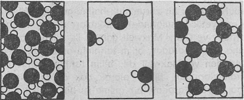

Doğu mistikçilerinin dediklerine göre, gerçekliğin mistik tecrübe edilişi, insanın dünya görüşünü" birdenbire alt-üst eden anlık bir olaydır. D. T. Suzuki, bu olayı şöyle anlatmaktadır: «insanın bilinç dünyasında gerçekleşebilen ve bütün alışılmış tecrübeleri gölgede bırakan olağanüstü bir yaşayıştır bu»(l). Suzuki, bu tecrübemin şok edici özelliğini, ünlü bir Zen öğretmeninin sözlerini kullanarak şöyle anlatmaya çalışmıştır: «Bu, sanki dibi patlayan bir kovadır.»
Atom fizikçileri, bu yüzyılın başlarında yukarıda anlatılan duyguları yaşamışlardı. Atomsal gerçekliğin yepyeni tecrübesi, sahip oldukları dünya görüşlerini temelden sarsmış ve söz konusu değişimi anlatırlarken de, Suzuki'nin Zen öğretmenine benzer açıklamalar kullanmışlardı. Örneğin Heisenberg şunları yazmıştı:
«Modern fizikte yaşanılan değişimlere gösterilen yoğun tepkileri, ancak bu fiziğin temellerini oluşturan öğelerim sarsılmaya başladığını ve yıkılmaya doğru gittiklerini göz önünde bulundurursak anlayabiliriz. Bu sarsıntı, bilimin artık temelsiz kalacağı kaygısını da doğurmuştur» (2).
Einstein da atom fiziğinin yeni gerçekleri ile ilk kez yüz yüze geldiğinde aynı şoku yaşamıştı. Yazmış olduğu otobiyografide şöyle diyordu:
«Fiziğin kuramsal temellerini söz konusu yeni olgulara uydurabilme çabalarımın tümü başarısızlıkla sonuçlanmıştı. Sanki üstünde durduğumuz temeller birdenbire çökmüş gibiydi. Ayrıca bu yeni yapıyı kurabileceğimiz başka bir temel de görünürlerde yoktu» (3).
Modern fizik alanında yapılan yeni keşifler sonucunda uzay, zaman, madde, cisim, etki ve sonuç gibi kavramlarda geniş değişikliklere gidilmesi gerekiyordu. Ama söz konusu kavramların dünyayı tecrübe edişimizin en temel araçları olmaları, onlarda değişi klikler yapmak zorunda olan fizikçilerde âdeta bir şok etkisi yaratmıştı. Ve bu değişiklikler sonucunda, yeni ve eskisinden tamamen farklı bir dünya görüşü oluşmaya başlamıştı. Bu oluşumun, yeni bilimsel araştırmalar yardımıyla halen devam ettiğini de unutmamak gerekir.
Söylediklerimizi göz önünde tutarak. Doğu mistikçisinin ve Batı fizikçisinin aynı tecrübe basamaklarından geçtiklerini iddia edebiliriz. Böylece onlar, dünyayı bütünüyle farklı bir açıdan görebilme imkânına ulaşabilmişlerdir. Aşağıdaki iki alıntıda, Avrupa'lı fizikçi Niels Bohr ve Hindistanlı mistikçi Sri Aurobindo, söz konusu tecrübenin derinliğini ve köklülüğünü açıklamaktadırlar:
«Son yıllarda yaşadığımız büyük tecrübeler bize, sahip olduğumuz basit mekaniksel kavramlarımızın yetersizliğini göstermiş ve bunun sonucu olarak da„ alışageldiğimiz gözlemleme temellerimizi bütünüyle yerinden oynatmıştır» (4).
Niels Bohr
«Gerçekten de, her şey, doğası ve görüntüsü açısından değişmeye başlıyor, insanın dünyayı algılayış biçimi bile köklü bir değişime uğruyor. ... Artık insanlara tecrübe edişin, görmenin, bilmenin ve temas etmenin yepyeni, ¿geniş ve derin bir yolu açılmış oluyor» (5).
Sri Aurobindo
Kitabın bu bölümünde, dünyanın yeni algılanış biçimini, klasik fizik öğretisi ile karşılaştırarak kısaca tanıtmaya çalışacağım.(*). Böylece klasik mekaniksel dünya görüşünün nasıl değiştirildiği ve Kuantum kuramı ile izafiyet kuramının bu değişimde ne gibi bir rol oynadığı görülebilecektir. Modern fizik alanında gelişen bu iki temel kuram aracılığı ile daha sonra, doğayı açıklamaya çalışan, parçaları birbiriyle ilintili, bütünsel ve «organik» bir dünya görüşü ortaya çıkmıştır.
*Aşağıdaki satırlardaki kısa tanıtımı çok özel ve anlaşılmaz bulan okuyucular hemen tedirgin olmasınlar. Bu bölümde sözü geçecek olan bütün kavram ve tasarımlar daha sonra geniş bir biçimde ele alınıp, incelenecektir.
KLASİK FİZİK
Modern fizik alanında yapılan keşiflerle yerinden oynayan bu dünya görüşü, Newton'un geliştirmiş olduğu evrensel mekanik modele dayanmaktaydı ve bu model, klasik fizik anlayışının o sert çekirdeğini oluşturuyordu. Gerçekten de bu temel, bütün bilimleri destekleyerek kendi felsefesini ve tabiat anlayışını yaklaşık olarak üç yüzyıl gibi bir süre ayakta tutabilmişti.
Newton evreni, klasik Öklid geometrisinin üç boyutlu uzay görüşüne dayanmaktaydı, içinde tüm fiziksel olguların -meydana geldiği bu üç boyutlu uzay, hiç bir biçimde değişmezdi ve bütünüyle durağan bir özelliğe sahipti. Eğer Newton'un kendi sözlerini kullanacak olursak: «Mutlak uzay, kendi doğası nedeniyle ve kendi dışındaki hiç bir şeye göre izafi olmamak kaydıyla, her zaman aynı ve değişmezdir» (6). Buna bağlı olarak da, fiziksel dünyada meydana gelen her türlü değişim, yine kendi içinde mutlak olan bir başka boyut yardımı ile ifade edilebilmektedir. Sözü edilen bu başka boyut, zaman boyutundan başkası değildir ve temel bir önermeyle, zamanın, maddesel dünya ile ilgili hiçbir bağı bulunmadığı ve geçmişten geleceğe doğru hiç durmaksızın akıp gittiği kabul edilmiştir. Newton, bu konuda şunları yazar: «Mutlak, gerçek ve matematiksel zaman, düzenli bir biçimde akıp gitmektedir ve haricinde bulunan hiç bir şeye bağlı değildir»(7).
Newton dünyasının mutlak zamanı ve mutlak uzayında hareket etmekte olan temel öğeler, maddesel parçacıklardan oluşmaktadırlar. Bu parçacıklar, matematiksel denklemlerde, «maddesel noktalar» olarak ele alınmışlardır. Newton ise, onları; küçük, sert ve bölünemez varlıklar olarak düşünmekteydi. Ona göre söz konusu varlıklar, evrende bulunan tüm maddemin yapı taşlarını oluşturmaktaydılar. Aslında bu model, fikir açısından, Yunanlı atomistlerin dünya görüşlerine de çok yakındı. Çünkü her iki model de, dolu ve boş, madde ve uzay gibi temel ayırımlara dayanmaktaydı. Ayrıca bu modellerde görülen temel parçacıklar, ağırlıkları ve şekilleri açısından sürekli olarak aynı kalmaktaydılar. Buna göre madde, her zaman korunmaktaydı ve yalnızca edilgen bir durumdaydı. Fakat Demokrit'çi ve Newton'cu atomizm arasındaki en önemli fark, Newton'un, maddesel parçacıklar arasında, etki eden kuvvetleri kesin bir biçimde açıklamış olmasında gizlidir. Newton'a" göre yer-çekimsel kuvvetler çok basit birer olgudurlar. Asıl önemli olan bu kuvvetlerin temelinde yatan parçacıkların kütleleri ile aralarındaki uzaklıkların miktarıdır. Ayrıca yerçekimsel kuvvet, bütün uzaklıklara aynı biçimde uzanmakta ve onları kapsamaktadır, ilginç bir hipotez olmasına rağmen, Newton'un geliştirmiş olduğu model, hiçbir zaman derinlemesine araştırılmamıştı. Çünkü söz konusu parçacıklarla, onlar arasında etki eden kuvvetler, Tanrı vergisi olarak kabul edilmekteydi ve bu nedenden dolayı da ileriye giden analizlere gerek olmadığı kanısı çok yaygındı. Örneğin Newton, «Opticks» adlı eserinde, Tanrı'nın maddesel dünyayı nasıl yaratmış olduğunu kendince şöyle açıklamaktaydı:
«Bence Tanrı, en başta maddeyi; sert, kütleli, katı, geçirgensiz ve hareketli parçacıklardan yaratmıştı. Parçacıkların büyüklük ve şekilleri, onların uzaya olan oranları ve diğer özellikleri, yaradılışın hedefine doğru bir yön almışlardı. Katı parçacıklar, birleşmeleriyle oluşturdukları tüm cisimlerden daha serttirler. Onlar o kadar serttirler ki, hiçbir zaman paramparça olmaları söz konusu olamaz. Hiç bir alışılagelmiş güç, Tanrı'nın ilk anlarda yarattığını bölemeyecektir»(8).
Newton mekaniğinde, bütün fiziksel olaylar, maddesel noktaların karşılıklı yerçekimsel kuvvetlerinden meydana gelen uzaysal bir hareketten doğ-'maktadırlar. Newton, böyle bir maddesel noktanın 'kuvvetini kesin ve net bir matematiksel biçime sokabilmek için, yepyeni' tasarım ve teknikler geliştirmek zorunda kalmıştı. Aslında tüm bunlar, olağanüstü bir zihinsel başarıydı ve Einstein daha sonra, Newton'un başarısını şu övgülü sözlerle anlatmaya çalışmıştı: «Herhalde bu, tek bir kişinin yapmaya muvaffak olduğu en büyük düşünsel gelişmedir.»
Klasik mekaniğin temelleri, bütünü ile Newton'un denklemlerine dayanır. Bu denklemlerin, değişmez birer yasa oldukları kabul edilmiş ve tüm maddesel -noktaların bu yasalara göre hareket ettikleri düşünülmüştür. Bundan dolayı, fiziksel dünyada gözlemlenen bütün değişikliklerin kaynağında da, bu tür hareketlilikler aranmıştır. Newton'a göre Tanrı, zamanın başlangıcında maddesel parçacıkları, aralarında etki eden kuvvetleri ve hareketin temel yasalarını yaratmıştı. Böylece evren, bir bütün olarak harekete geçmiş ve o andan itibaren, değişmez yasaların idare ettiği bir makine gibi hareket etmeye devam etmiştir.
Bu bağlam içinde, doğanın mekanistik bir biçimde yorumlanması, katı ve kesin bir determinizme yol açmıştı. Bu son derece büyük kozmik makine, tamamıyla nedensel ve belirlenebilir olarak-görülmekteydi. Bu görüşe göre, evrende meydana gelen her şeyin kesin bir sebebi ve ayrıca da bundan doğan kesin bir etkisi ya da sonucu vardı. Bir sistemdeki her bir öğenin geleceği (prensipte) mutlak bir kesinlikle önceden kestirilebilir hale gelmekteydi (tabii eğer belirli bir anda sahip olduğu tüm detay bilgileri bilimiyorsa). Bu inanış, Fransız matematikçisi Pierre Simon Laplace'ın şu ünlü sözleriyle en güzel anlatım biçimini bulmuştur:
«Belirli bir anda doğada etki eden bütün kuvvetlerin ve belirli bir anda dünyanın temellerini oluşturan cisimlerin bulundukları yerlerin kesin bir tanımına sahip olan bir beyin, (eğer bu kadar çok bilgiyi işleyecek kadar güçlü bir beyinin varolduğu varsayılırsa), evrende bulunan en büyük cisimlerden en küçük atomlara kadar bütün hareketleri kavrayabilir. Artık hiçbir şey belirsiz kalmayacaktır. Gelecek ve geçmiş, şimdiki zamanın bilinen ve görünen birer öğeleri haline dönüşeceklerdir» (9).
Sözü edilen belirliliğin felsefî temelini, Descartes tarafından geliştirilen «Ben» ve «Dünya» arasındaki genel ayırım oluşturmaktadır. Bu ayrımın bir sonucu olarak, çevremizdeki dünyanın nesnel bir biçimde açıklanabileceğine inanılıyor, yani artık gözlemci kişinin önemi ortadan tamamıyla kalkıyordu. Doğanın bu türden bir nesnel açıklanışı, tüm bilimlerin en büyük ideali haline gelmişti.
On sekizinci ve on dokuzuncu yüzyıllarda da, Newton mekaniğinin başarısı hızla kendisini göstermeye başlamıştı. Nitekim Newton, geliştirmiş olduğu kuramını gezegenlerin hareketlerine uygulamış ve bu şekilde güneş sisteminin en önemli özelliklerini açıklayabilmişti. Ama aslında, yaratmış olduğu gezegenler modeli, çok basitleştirilmiş bir yapıydı. Örneğin gezegenlerin kendi aralarındaki yerçekimsel kuvvetleri bütünüyle göz ardı edilmişti. Bundan dolayı da Newton'un karşısına nedenini tam olarak açıklayamadığı bazı düzensizlikler çıkmıştı. Newton, bu sorunu, evrende düzensizlikleri sürekli olarak düzelten bir Tanrı'nın varolduğunu düşünerek çözmüştü.
Ancak büyük matematikçi Laplace bununla yetinmemiş ve kendi kendine, Newton un hesaplarını düzeltmek ve mükemmel bir biçilme getirmek görevini üstlenmiştir. Yazacağı kitap, «güneş sisteminin ortaya koyduğu büyük mekaniksel soruna köklü bir çözüm getirecek ve kuram ile gözlem arasında o kadar büyük bir benzerlik kuracak ki, artık astronomik tablolarda ampirik denklemler yer almayacaktır» (10). Sonuç olarak Laplace, «Mécanique Céleste» (Uzayın Mekaniği) adlı beş ciltlik eserinde, gezegenlerin, ayın ve kuyruklu yıldızların hareketlerimi büyük bir doğrulukla açıklayabilmiş ve gel-git olayı ile diğer yerçekimsel fenomenleri de aynı doğrulukla saptayabilmiştir. Ayrıca Newton'un hareket yasalarının güneş sistemindeki istikrarı ve düzeni sağladıklarını ve evrenin kemdi kendini yöneten mükemmel bir makine olduğunu gösterebilmiştir. Söylendiğine göre Laplace, eserinin ilk baskısını Napoleon'a takdim ettiğinde, Napoléon ona, «-Monsieur Laplace, bana, bu büyük kitabı evrensel sistemi açıklamak üzere yazdığınızı söylediler; ama bir kelimeyle dahi olsa Yaradan'dan hiç söz etmemişsiniz» der. Laplace ise pek sakınmadan imparatora şu cevabı verir: «Yer vermedim, çünkü öyle bir hipoteze hiç gerek yoktu.»
Newton mekaniğimin, astronomi alanında göstermiş olduğu büyük başarı nedeniyle fizikçiler, bu modeli akışkanların hareketlerini ve elektriksel cisimlerin titreşimlerini açıklamada kullanmaya başlamışlardı. Söz konusu model, bu alanda da olağanüstü bir biçimde işliyordu. Sonunda ısı kuramı bile mekaniksel bir açıklamaya indirgenebiliyordu. Bunu yapabilmek için, ısıyı, moleküllerin karmaşık hareketlerinden doğan bir enerji biçimi olarak görmek yeterliydi. Örneğin suyun ısısı arttırıldığında, su moleküllerimin hareketleri de artmakta ve su moleküllerini birbirlerine «yapıştıran» kuvvetler ortadan kalkıp moleküller «dağılıncaya» dek bu artış da devam-etmektedir. Bu dereceye ulaşan su ise buhara dönüşerek, biçim değiştirecektir. Öte yandan ısı sal hareket suyun soğutulması yoluyla azaltıldığında, moleküller yavaşlayacaklar ve katı ve sert bir düzene gireceklerdir. Bu şekilde de buz meydana gelecektir, işte bu örneğe benzer bir biçimde, diğer bütün ısısal fenomenler, sade ve net bir mekanistik bakış açısıyla açıklanmaya başlamıştı.

Su Sıvı haldeki su buharı Buz
Mekaniksel modelin elde ettiği olağanüstü başarı, on dokuzuncu yüzyıl başlarında yaşayan fizikçilerin, evreni gerçekten de Newton'un hareket yasalarına uygun bir biçimde çalışan büyük bir makine olarak görmelerine neden olmuştu. Söz konusu yasalar, artık doğanın temel yasaları olarak görülmeye başlanmıştı. Newton'un mekaniği ise, doğal fenomenlerin en son ve en kapsayıcı kuramı olarak algılanır olmuştu. Ancak yüzyıl kadar kısa bir süre içinde, yeni bir tiziıksel gerçeklik ortaya çıkartılmış ve Newton'cu modelin sınırlılığı ortaya konulmuş oldu. Zamanla farkına varılan bu yeni bulgular, aslında Newton mekaniğini oluşturan biç bir öğenin mutlak bir niteliğe sahip olmadığını göstermişlerdi.
Eğer daha doğru söylemek gerekirse, söz konusu görüş değişimi ansızın ortaya çıkmamıştı. Hatta on dokuzuncu yüzyılda meydana çıkan bazı bulgular günümüzün bilimsel devrimlerine yol göstermişlerdi. Bu çerçevede anılması gereken gelişmelerden ilkini, elektrik ve manyetik fenomenlerin keşfi ve araştırılması oluşturmaktadır. Bu konuda mekaniksel model yetersiz kalmış ve yepyeni bir kuvvet türünün kabul edilmesi bir zorunluluk haline gelmişti. Elektrik ve manyetik konularında ilk adımları- atanlar Michael Faraday ve Clark Maxwell adında iki bilim adamıydı. Daha sonra Faraday, bilim tarihinin en büyük deneycilerinden ve Maxwell de, bilim tarihinim en büyük kuramcılarından birisi olarak çok onurlu1 bir yer alacaklardı. Faraday, bir mıknatısı bir tel bakır sargısına yaklaştırdığında, mıknatısın mekanik hareketini bakır telindeki elektriksel bir enerjiye çevirebilmiş ve böylece bilimsel ve teknolojik bilgi birikimini yeni bir dönüm noktasına getirmişti. Bu devrim niteliğindeki deney, bir taraftan elektrik mühendisliği alanında bir çığır açmış, öte taraftan da kendisinin ve Maxwell'in kuramsal spekülasyonlarına yeni bir temel oluşturmuştu. Sonuç olarak, elektromanyetizma adında tümüyle yeni bir kuram ortaya çıkmıştı. Faraday ve Maxwell, araştırmalarını yalnızca elektrik ve manyetik kuvvetlerin etkilerini kavramak için değil, aynı zamanda bu kuvvetlerin doğalarını anlamak için de yürütüyorlardı. Sonuç olarak «kuvvet» kavramı «kuvvet alanı» kavramıyla değiştirilmiş Ve böylece ilk defa Newton'cu fiziği aşan bir model ortaya konulmuştu.
Faraday ve Maxwell, eksi ve artı yüklü iki parçacığın birbirlerini çekmelerini, kütlesel çekime uygun bir biçimde açıklamak yerine (yani Newton'cu fiziğin uyguladığı yolun dışında) her yüklü parçacığın kendilerini çevreleyen uzayda bir «karmaşa» ya da bir «durum» oluşturduğuna inanıyor ve bu tür bir yerde bulunan diğer bir yüklü parçacığa belirli bir kuvvet uygulandığını savunuyorlardı. Uzayda bulunan ve kuvvet yaratma yeteneğine sahip olan böyle bir duruma, «alan» denmektedir. Bir alan, bir tek yük tarafından meydana getirilmekte ve başka bir yüklü parçacığın bu alana girip girmemesinden bağımsız olarak varolmaya devam etmektedir.
Alan kavramı, insanoğlunun fiziksel gerçeklik ile ilgili ortaya atmış olduğu görüşlerde büyük bir değişiklik anlamına geliyordu. Çünkü Newton'cu görüşe göre, bütün kuvvetler, etki ettikleri cisimlerle sıkı sıkıya ilintili olmaktadırlar. Ama şimdi, «kuvvet görüşü» yerini «alan görüşü» biçiminde çok daha belirsiz bir kavrama bırakıyordu. Bu «alan görüşünün» kendine özgü bir gerçekliği vardı ve hiçbir maddesel cisme atıfta bulunmadan (ya da izafiyet göstermeden) kendi başına incelenebiliyordu. Bu kuramın zirve noktasını oluşturan «elektrodinamik» model ise, ışığın yalnızca çok hızlı bir biçimde değişiklik gösteren ve uzayda dalgalar halinde hareket eden bir elektromanyetik alan olarak açıklanmasıyla Önlenmişti. Örneğin günümüzde radyo dalgalarının, ışık dalgalarının ve röntgen ışınımının elektromanyetik dalgalardan meydana geldiğini ispatlamış bulunuyoruz. Salınım (ya da fiziksel terminoloji ile «ozsilasyon») gösteren elektrik ve manyetik alanlar yalnızca ozsilasyonlarının frekanslarında farklılaşmakta, ama aslen aynı kalmaktadırlar. Böylece, görülen ışığın, büyük elektromanyetik tayfın yalnızca çok küçük bir bölümünü oluşturduğu anlaşılmaktadır
Söz konusu büyük çaplı değişikliklere rağmen, ilk önceleri Newton mekaniği yerini korumayı başarabilmiş ve fiziğin temeli olmaya devam etmişti. Maxwell bile elde ettiği deney sonuçlarını mekanik kavramlarla açıklamaya çalışmış ve elektromanyetik alanları, çok hafif bir uzay dolgu maddesinde (buna «eter» de deniliyordu) meydana gelen mekaniksel gerilmelerin bir sonucu olarak düşünme çabası içine girmişti. Elektromanyetik dalgaları ise «eter»de oluşan elastik dalgalar diye açıklıyordu. Aslında bu görüş çok da yanlış değildir, çünkü genelde dalgalar, bir cismin titreşimi biçiminde ortaya çıkmaktadırlar. Sudaki dalgalar suyun, ses dalgaları da havanın titreşimi sonucu oluşur. Ama Maxwell, kuramını açıklamak için" birçok mekaniksel yorumlamalara aynı anda yer vermekteydi ve böylece adeta bunların biç birinin, incelediği gerçekliği tam anlamıyla açıklayamadığını beyan ediyordu. Açıkça belirtmiş olmamasına rağmen, herhalde kuramını oluşturan temel unsurlarını, mekaniksel modellerin değil, elektromanyetik alanların teşkil ettiğini hissetmiş olmalıydı. Bu gerçeği net olarak gören, yaklaşık elli yıl sonra Einstein olmuştur. Einstein, eter diye bir şeyin var olmadığını açıklamış ve elektromanyetik alanların birer fiziksel varlık olarak kendi kurallarına sahip olduklarını gösterebilmiştir.